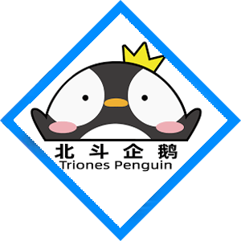

圖特哈蒙
-

- 
我們要努力做好自己要做的東西。
暱稱「圖大」的圖特哈蒙，聲音沉厚穩重，音色充滿力量和滄桑感，有著古香古色的國風氣質，是古裝劇以及國風動漫配音的首選。其配音聲線多為渾厚的大叔音，亦會多種方言，配音效果風格多變，喜感十足。他曾表示，聲優偶像化的前提是有一個好作品，這需要配音演員或是配音愛好者，都應該用更高的標準來要求自己，這對整個行業都是一個好的表現。
導演作品-《航海王：狂熱行動》、《魔道祖師》......配音作品-旁白/三傑的隨從/李提督——《廚神小當家2》、肖力——《時光代理人》、滕根/張伯——《百妖譜》、楊幗中——《天寶伏妖錄》、魏琛——《全職高手2》、周瑜——《廚神小當家》、無限——《羅小黑戰記》......